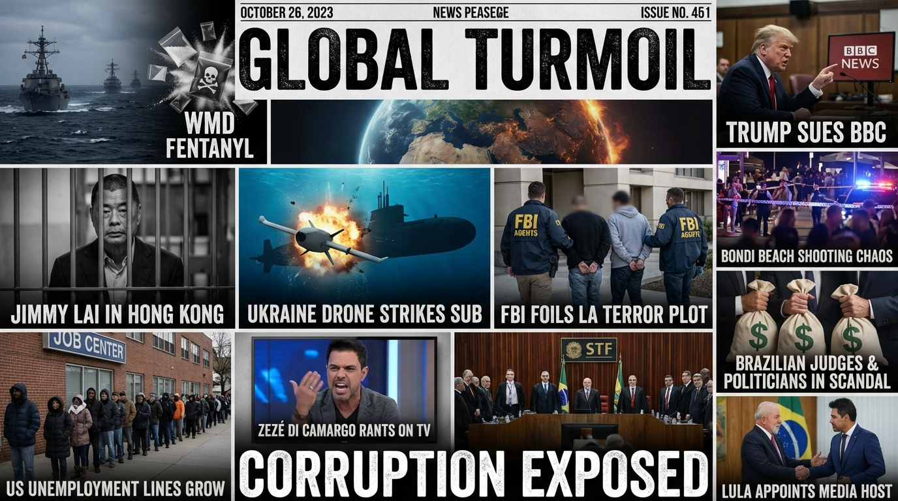

The Daily Globe: Trump Classifies Fentanyl as Weapon of Mass Destruction, Trump Demands Minnesota Gov. Tim Walz Resignation Over Fraud Scandal, and Zezé di Camargo's Inflammatory Comments Lead to SBT Christmas Special Cancellation
Published on 2025-12-17

World
- Trump Classifies Fentanyl as Weapon of Mass Destruction
President Trump signed an executive order labeling illicit fentanyl a WMD, potentially justifying military interventions against cartels and expanding domestic surveillance. Critics call it fearmongering following US strikes on drug vessels that killed eight.
- Trump Sues BBC for $10 Billion Over January 6 Speech Editing
Trump filed a defamation lawsuit against the BBC alleging they edited his pre-January 6 speech to falsely imply incitement to violence. The suit reignites US-UK media tensions and January 6 polarization.
- Antisemitic Mass Shooting at Bondi Beach Hanukkah Gathering in Australia
ISIS sympathizers killed 15 including a child and injured 40 at a Sydney Jewish event. PM Albanese's emphasis on far-right threats sparks backlash over ignoring Islamist extremism and immigration.
- Jimmy Lai Convicted Under Hong Kong's National Security Law
Pro-democracy activist Jimmy Lai found guilty of foreign collusion, facing life imprisonment in Beijing's crackdown on dissent. Trump voiced concern, escalating US-China tensions.
- Ukraine's Underwater Drone Strike on Russian Submarine Amid Peace Talks
Ukraine damaged a £300 million Russian sub in the Black Sea; Berlin peace talks offer US guarantees but require Ukraine to forgo NATO and possibly cede territory, dividing hawks and realists.
USA
- Trump Demands Minnesota Gov. Tim Walz Resignation Over Fraud Scandal
The Trump administration formally demands Democratic Gov. Walz resign citing massive fraud with political ties and election integrity issues. Defenders label it a partisan witch hunt.
- FBI Arrests Four in Foiled New Year's Eve Bomb Plot by Pro-Palestinian Group
FBI arrests members of anti-capitalist, pro-Palestinian extremists plotting pipe bomb attacks in LA on NYE. Debates rage over domestic terrorism, profiling, and travel bans.
- Brown University Shooting Probe Highlights FBI Investigation Failures
Enhanced video of person of interest released amid criticism of FBI under Kash Patel bungling third major probe. Questions mount on campus violence and Trump's appointees.
- US Unemployment Rises to Highest Since 2021 as GOP Blocks ACA Subsidies
Jobs report shows spike in unemployment; House Republicans refuse to extend Obamacare subsidies, potentially causing premium surges for millions amid holiday economic fears.
Brazil
- Zezé di Camargo's Inflammatory Comments Lead to SBT Christmas Special Cancellation
Singer Zezé di Camargo accused SBT owner's daughters of prostituting themselves for associating with Lula, resulting in his pre-recorded special's cancellation. Ignites free speech and misogyny debates.
- STF Rejects Leniency for January 8 Coup Attempt Convicts
Justice Alexandre de Moraes rules no penalty reductions for coup plotters, signaling Brazil's intolerance for anti-democracy threats amid Bolsonaro allies' trials.
- Major Corruption Probes Escalate: INSS R$300M Fraud, Banco Master, Secret Emendas
Investigations intensify into monthly R$300M INSS thefts, urgent Banco Master probe by Toffoli, and PIX transfers to Arthur Lira's aide, implicating senators like Alcolumbre.
- Lula Faces Backlash Over Appointment of Sensationalist Datena to Public EBC
President Lula appoints controversial TV host Datena to public broadcaster shows; journalist unions decry it as politicizing media and clashing with public service mission.
Topic Index
- corruption
- terrorism
- drugs
- media
- china
- ukraine
- justice
- economy